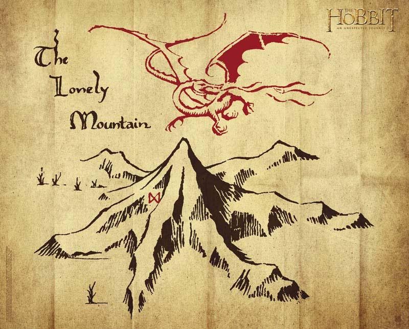
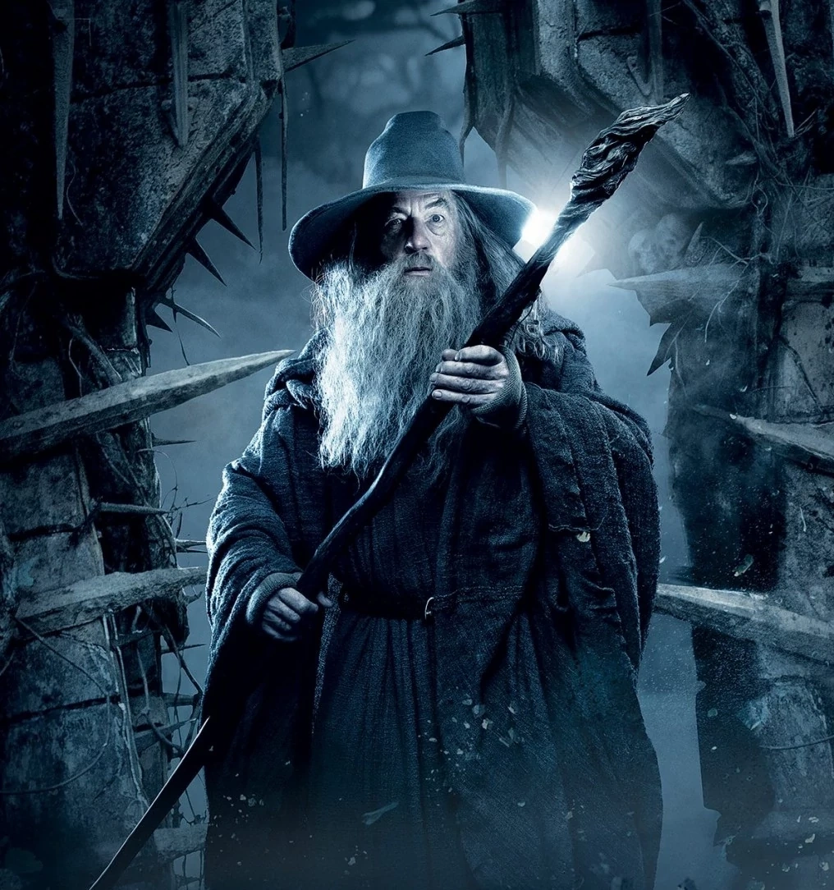
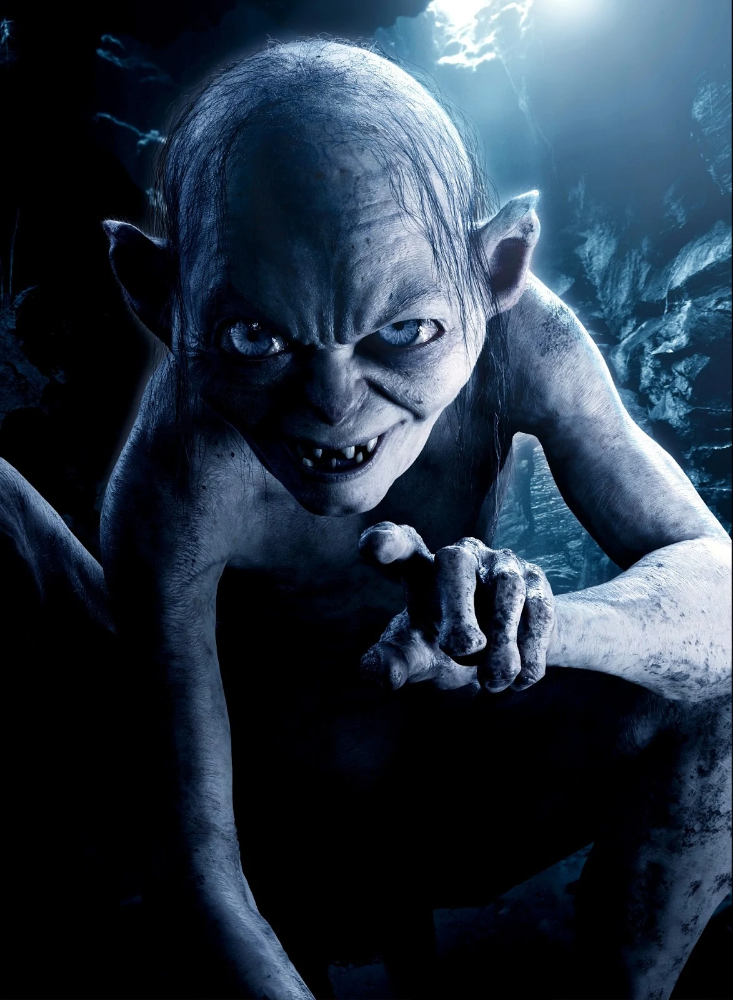
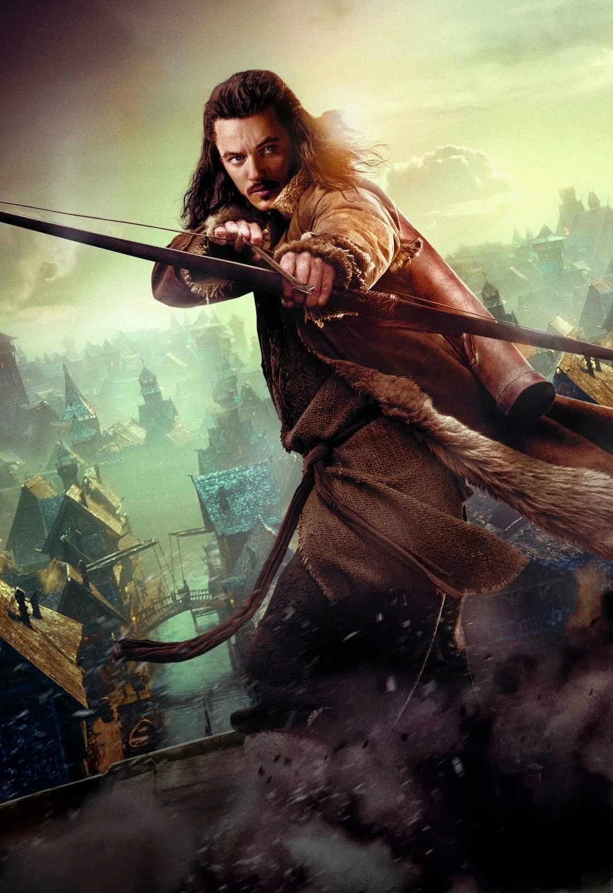
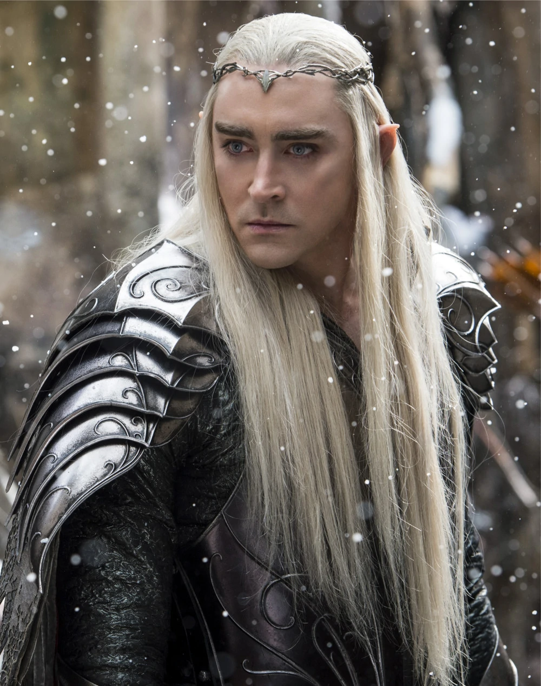
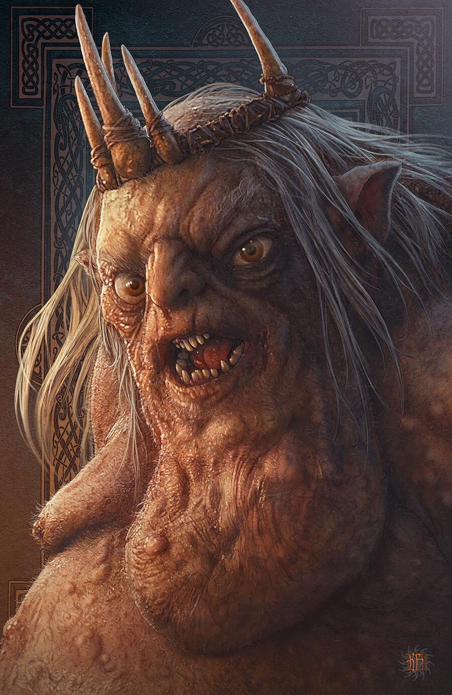
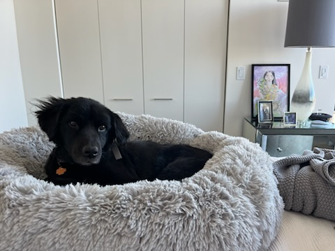

Hobbits, a race of small humanlike creatures, characteristically value peace, simplicity, and cozy homes yet are capable of incredible feats of courage and resourcefulness. The unwilling hero of The Hobbit, Bilbo Baggins, is persuaded to join Thorin and his 12 dwarfs to recover their stolen treasure, which is being guarded by the dragon Smaug. During the expedition, Bilbo finds a magical ring that renders the wearer invisible, which figures prominently in The Lord of the Rings. The Hobbit is the story of Bilbo's maturing from a seeker of warmth and comforts to a fighter, however humble, for the greater good.
The story of Bilbo's journey has many strong themes that can be felt throughout. Those most noticeable are the themes of Greed, Home and Birthright, Heroism, and the Power of Language.
Greed can be felt throughout the book especially when looking at the antagonist Smaug, a dragon embodying the essence of greed. The king's jewel and the Misty Mountain as a whole also represent endless wealth that nations go to war for. It is only through great loyalty that Bilbo is able to resist the allure of the mountains of gold. It is the small ct of the individual who takes what they need and nothing more that Bilbo embodies and makes him immune to the dragon sickness.
Home and Birthright can also be seen in the story in ties with the Misty Mountain and Thorin who by birthright feels that the mountain and its treasures belong to him and his kin. It is also what leads Thranduil to abandon the dwarves to the dragon. It is his belief that certain jewels that the dwarves have belong to him but as he was denied he refused to aid the dwarves in their time of need.
Heroism is also a very present theme as the book's protagonist learns what it means to be a hero. Bilbo leaves the comfort of his home and journeys to a mountain where he willingly steals from a dragon. He braves hardships throughout his journey there and the following war after the death of Smaug. He leans to not shy away from danger and to do what is right, not what is expected.
Power of Language is another strong theme due to the incapability of the protagonist, Bilbo. He is not a warrior and has no fighting experience yet he is able to get the part and himself out of danger constantly due to his tongue. That is to say he learns the importance of language and how one can use it to stall, sow discord, and to distract. It is the main skill that Bilbo relies aon during his adventure and is his most skilled ability.
Bilbo Baggins
The hero of the story. Bilbo is a hobbit, "a short, human-like person." Commonsensical and fastidious, Bilbo leads a quiet life in his comfortable hole at Bag End and, like most hobbits, is content to stay at home. But Bilbo possesses a great deal of untapped inner strength, and when the wizard Gandalf persuades Bilbo to join a group of dwarves on a quest to reclaim their gold from a marauding dragon, Bilbo ends up playing a crucial role as the company's burglar. Bilbo's adventures awaken his courage and initiative and prove his relentless ability to do what needs to be done.
Gandalf the Grey
A wise old wizard who always seems to know more than he reveals. Gandalf has a vast command of magic and tends to show up at just the moment he is needed most. Though he helps the dwarves in their quest (not least by making Bilbo go along with them), he does not seem to have any interest in their gold. He always has another purpose or plan in mind, but he rarely reveals his private thoughts.
Thorin Oakenshield
A dwarf who leads his fellow dwarves on a trip to the Lonely Mountain to reclaim their treasure from Smaug. Smaug's bounty is Thorin's inheritance, as it belonged to Thror, Thorin's grandfather, the great King under the Mountain. Thorin is a proud, purposeful, and sturdy warrior, if a bit stubborn at times. As the novel progresses, his inability to formulate successful plans, his greed, and his reliance on Bilbo to save him at every turn make Thorin a somewhat unappealing figure, but he is partly redeemed by the remorse he shows before he dies.
Gollum
A strange, small, slimy creature who lives deep in the caves of Moria beneath the Misty Mountains. There, Gollum broods over his "precious,"" a magic ring, until he accidentally loses it and Bilbo finds it. We never learn exactly what kind of creature he is. Apparently, his true shape has been too deformed by years of living in darkness to be recognizable.

Bard
The grim human who is the honorable captain of the guard in Lake Town, a human city built on Long Lake just south of the Lonely Mountain. With the help of information discovered by Bilbo and related by a thrush, Bard finds Smaug's weak spot and kills him.
Thranduil
Thranduil is a fictional character in J. R. R. Tolkien's Middle-earth legendarium. He first appears as a supporting character in The Hobbit, where he is simply known as the Elvenking, the ruler of the Elves who lived in the woodland realm of Mirkwood. The character is properly named in Tolkien's The Lord of the Rings, and appears briefly in The Silmarillion and Unfinished Tales. The character has appeared in adaptations of The Hobbit in other media.
Smaug
The great dragon who lives in the Lonely Mountain. Years ago, Smaug heard of the treasure that the dwarves had amassed in the mountain under Thror's reign, and he drove them away to claim the gold for himself. His flaming breath can scorch a city, his huge wings can carry him great distances, and his armorlike hide is almost impenetrable. Smaug can speak and possesses a dark, sardonic sense of humor.
Goblin King and Goblins
Evil creatures encountered by Bilbo and company. Goblins are infamous for their ability to make cruel weapons and torture devices. The king is given more focus in the movies. The movies also replace the goblins with orcs as main antagonist.
Azog the Defiler
Azog was an Orc-lord of the Third Age who commanded the tribes of Moria until his death in TA 2799. He was responsible for the death of the Dwarven King Thror. In the movies he is turned into the main antagonist, however he only has a brief mention in the book.
Queenie
This is Queenie my dog she looks like a pup but she is around 9 yars old.